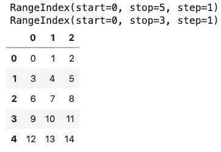
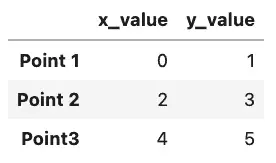
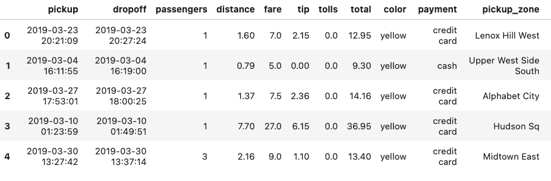
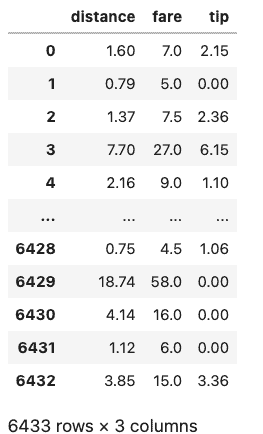
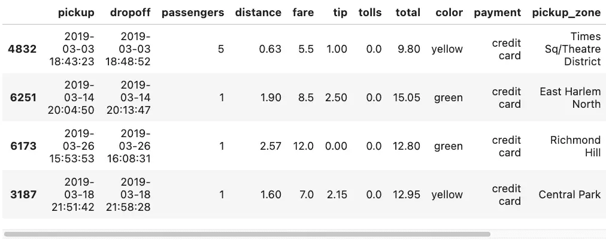

Pandas Examples and Review Questions to Make You an Expert¶
Pandas is a hugely popular tool for data analysis and machine learning. It builds on the strengths and speed of Numpy to allow for mixed column types in a two-dimensional DataFrame that is indexable by column or row.
As popular as it is, Pandas offers so many different ways to do things that it helps to have examples and practice exercises to refresh our memory from time to time. To help with this goal, this article is divided into two parts. The first part consists of several Pandas library examples that review some of the most important topics to help you use Pandas effectively.
The second part follows up on our Numpy Examples: Forty-Five Practice Questions to Make You an Expert with a similar set of fun sample questions for Pandas. Some of these will be challenging to you if you’re new to Pandas (or, like me, you’re reviewing it). However, for those of you familiar with the Python data science stack, I’m sure you’ll find that there will be some you can do in your sleep. Also, there’ll be at least a bit of overlap with the examples in the first section as well, so you won’t be starting totally from scratch!
Note that in addition to Pandas, we’ll also be taking advantage of the sample data sets from Seaborn. You’ll need to be able to load one of these data sets into a DataFrame to answer many of the questions. (One solution is provided for you since it’s critical to later answers).
Part One: Examples¶
Getting Started¶
The examples below assume you at least have the Seaborn library, since we’ll be using Seaborn’s built-in data sets both in this section and in the review questions. Installing Seaborn will transitively install Pandas and Numpy, so you won’t have more to do to use those libraries: By convention, the related libraries we will use are imported this way:
import pandas as pd
import numpy as np
import seaborn as sb
For convenience, many developers will import either or both of the Pandas DataFrame and Series directly, as shown below:
from pandas import DataFrame, Series
¶
Exploring Pandas Main Data Types
Pandas is a powerful Python library that provides robust data manipulation and analysis tools. At the core of Pandas are two key classes: the Series and the DataFrame. The Series class represents a one-dimensional array of data, while the DataFrame class represents a two-dimensional array. Both classes are built on top of NumPy, so the underlying array type is a NumPy array. Both provide efficient indexing, slicing, and filtering capabilities. In addition, Pandas also provides a wide range of statistical methods for analyzing data.
Common to both classes is a third class, a Pandas Index object. Every DataFrame and Series has an Index associated with it. Pandas indexes remind me of movie scenes where the prisoner is told if they can’t afford an attorney, one will be provided for him at no charge. By that I mean, if you don’t specify an index, you still get one anyway.
The Series Class¶
Let’s take a basic example of creating a series based on a one-dimensional NumPy array.
series = Series(np.arange(5,8))
print(series)
print(series.index)
print(series[1])
Output:
0 5
0 5
1 6
2 7
dtype: int64
RangeIndex(start=0, stop=3, step=1)
6
As you can see, if we don’t provide an index, we still get one – by default, it consists of a zero-based range index, so item 0 is the first item, etc. We take advantage of that to index into the second item.
We can also provide an index explicitly, and it needn’t be numeric. For example:
labeled = Series(np.arange(3), index=["Me", "You", "DogNamedBlue"])
print(labeled)
print(type(labeled.index))
Output:
Me 0
You 1
DogNamedBlue 2
dtype: int64
<class 'pandas.core.indexes.base.Index'>
The DataFrame Class¶
When most folks who are familiar with it think of Pandas, this is the class that most readily springs to mind. If the Series class can be described as a single, homogenous one-dimensional array coupled with an index, a DataFrame is a two-dimensional array, where:
Each column is like a series, but the index is shared between all the columns. Another way to as this is that the index is an index into the rows.
The columns can be of different types, but each value in a column is the same type (as with a series).
There’s also an index on the columns, which is accessible via the columns attribute.
We’ll get into several methods for loading existing data and using sample data sets later on in this article. For now, let’s take a simple example based on a NumPy range as we did for the Series case. We can pass a two NumPy array to create a simple DataFrame, so let’s see what index and columns we get by default.
import pandas as pd
import numpy as np
from pandas import DataFrame
array = np.arange(15).reshape(5,3)
df = DataFrame(array)
print(df.index)
print(df.columns)
df
Output (In Jupyter Lab):

If you’ve been following the discussion so far, you may notice that what we get for a two-dimensional DataFrame by default is very similar to what we get for a Series – a zero-based numerical index for both the columns (along the top) and the index(along the left-hand side). As with Series, what we get are range indexes by default. With Series, we were also able to provide a custom index. Here, we can provide both a row index (if desired), and an index for the columns (which is even more common).
import pandas as pd
import numpy as np
from pandas import DataFrame
array = np.arange(6).reshape(3,2)
df = DataFrame(array, columns =['x_value', 'y_value'], index=['Point 1', 'Point 2', 'Point3'])
df
Output:

Working With Sample Seaborn Data Sets¶
There are other ways to construct Pandas DataFrame objects, and a number of methods to load data, including several we’ll get into in the Pandas practice question section. When I worked with R briefly a few years ago, one of the things I enjoyed about that language was the ability to get sample data sets on which to experiment with certain features.
If we’ve loaded the Seaborn library, we have a similar group of sample data sets available to us as Pandas DataFrames. Let’s load one of these data sets now.
df = sb.load_dataset("taxis")
df.head()
Seaborn’s load_dataset function allows us to load sample data, and head() will show us the first few rows. Here’s a partial view of how it looks in Jupyter Lab:

If we need to see the column names for the entire table, we can get these with df.columns. For our table, df.columns shows the following:
Index(['pickup', 'dropoff', 'passengers', 'distance', 'fare', 'tip', 'tolls',
'total', 'color', 'payment', 'pickup_zone', 'dropoff_zone',
'pickup_borough', 'dropoff_borough'],
dtype='object')
Selecting Rows and Columns¶
We can select columns from the data frame by using square brackets. Selecting just one column as a string by using a string value returns a Pandas Series.
series = df['pickup']
print(type(s))
series
Output:
<class 'pandas.core.series.Series'>
0 2019-03-23 20:21:09
1 2019-03-04 16:11:55
2 2019-03-27 17:53:01
3 2019-03-10 01:23:59
4 2019-03-30 13:27:42
...
6428 2019-03-31 09:51:53
6429 2019-03-31 17:38:00
6430 2019-03-23 22:55:18
6431 2019-03-04 10:09:25
6432 2019-03-13 19:31:22
Name: pickup, Length: 6433, dtype: object
More commonly, we want to index into multiple columns, which returns a DataFrame. Note the double square brackets, as we’re actually passing this as a list to Pandas.
df[['distance', 'fare', 'tip']]
Output:

To select rows in Pandas, we can use the DataFrame’s loc method, passing it a condition. Here are some examples based on the taxis DataFrame.
Select rows with more than one rider in the cab:
df.loc[df['passengers'] > 1]
Select rows where the column is one of a list of certain values:
df.loc[df.pickup_borough.isin(['Queens', 'Bronx'])]
What’s going on in the inner condition is that we are creating a series of row IDs and booleans. The loc method is then indexing into and returning those rows where the value is True.
We can also select random rows with the Pandas sample function.
df.sample(n=4)

Part Two: Pandas Review Questions¶
Creating A Pandas DataFrame and Using Sample Data Sets¶
Using NumPy, create a Pandas DataFrame with five rows and three columns.
For a Pandas DataFrame created from a NumPy array, what is the default behavior for the labels for the columns? For the rows?
Create a second DataFrame as above with five rows and three columns, setting the row labels to the names of any five major US cities and the column labels to the first three months of the year.
You recall that the Seaborn package has some sample data sets built-in, but can’t remember how to list and load them. Assuming the functions to do so have “data” in the name, how might you locate them? You can assume a Jupyter Notebook / IPython environment and explain the process, or write the code to do it in Python.
Loading Data From CSV¶
Zillow home data is available at this URL: https://files.zillowstatic.com/research/public_csvs/zhvi/Metro_zhvi_uc_sfrcondo_tier_0.33_0.67_sm_sa_month.csv. How can you open this file as a DataFrame named
df_homesin Pandas?Save the DataFrame, df_homes, to a local CSV file, “zillow_home_data.csv”.
Load zillow_home_data.csv back into a new Dataframe, df_homes_2.
Compare the dimensions of the two DataFrames, df_homes and df_homes_2. Are they equal? If not, how can you fix it?
A remote spreadsheet showing how a snapshot of how traffic increased for a hypothetical website is available here: https://github.com/CodeSolid/CodeSolid.github.io/raw/main/booksource/data/AnalyticsSnapshot.xlsx. Load the worksheet page of the spreadsheet data labeled “February 2022” as a DataFrame named “
feb”. Note: the leftmost column in the spreadsheet is the index column.The “Month to Month Increase” column is a bit hard to understand, so ignore it for now. Given the values for “This Month” and “Last Month”, create a new column, “Percentage Increase”.
Basic Operations on Data¶
Using Seaborn, get a dataset about penguins into a DataFrame named “
df_penguins”. Note that because all of the following questions depend on this example, we’ll provide the solution here so no one gets stuck:
import seaborn as sb
df_penguins = sb.load_dataset('penguins')
Write the code to show the number of rows and columns in df_penguins.
How might you show the first few rows of df_penguins?
How can you return the unique species of penguins from df_penguins? How many unique species are there?
What function can we use to drop the rows that have missing data?
By default, will this modify df_penguins or will it return a copy?
How can we override the default?
Create a new DataFrame, df_penguins_full, with the missing data deleted.
What is the average bill length of a penguin, in millimeters, in this data set?
Which of the following is most strongly correlated with bill length? a) Body mass? b) Flipper length? c) Bill depth? Show how you arrived at the answer.
How could you show the median flipper length, grouped by species?
Which species as the longest flippers?
Which two species have the most similar mean weight? Show how you arrived at the answer.
How could you sort the rows by bill length?
How could you run the same sort in descending order?
How could you sort by species first, then by body mass?
Selecting Rows, Columns, and Cells¶
Let’s look at some precious stones now, and leave the poor penguins alone for a while. Load the Seaborn “diamonds” dataset into a Pandas DataFrame named diamonds.
Display the columns that are available
If you select a single column from the diamonds DataFrame, what will be the type of the return value?
Select the ‘table’ column and show its type.
Select the first ten rows of the price and carat columns ten rows of the diamonds DataFrame into a variable called subset, and display them.
For a given column, show the code to display the data type of the values in the column?
Select the first row of the diamonds DataFrame into a variable called row.
What would you expect the data type of the row to be? (Display it)
Can you discover the names of the columns using only the row returned in #33? Why or why not?
Select the row with the highest-priced diamond.
Select the row with the lowest-priced diamond.
Some Exercises Using Time Series¶
The seaborn “taxis” dataset has some datetime values for the time when the customer was picked up and dropped off.
Load the taxis dataset into a DataFrame,
taxis.The ‘pickup’ column contains the date and time the customer picked up, but it’s a string. Add a column to the DataFrame, ‘pickup_time’, containing the value in ‘pickup’ as a DateTime.
We have a hypothesis that as the day goes on, the tips get higher. We’ll need to wrangle the data a bit before testing this, however. First, now that we have a datetime column, pickup_time, create a subset of it to create a new DataFrame, taxis_one_day. This new DataFrame should have values between ‘2019-03-23 00:06:00’ (inclusive) and ‘2019-03-24 00:00:00’ (exlusive).
We now have a range from morning until midnight, but we to take the mean of the numeric columns, grouped at one hour intervals. Save the result as taxis_means, and display it.
Create a simple line plot of the value “distance”.
Overall, do riders seem to travel further or less far as the day progresses?
Create a new column in taxis_means,
tip_in_percent. The source columns for this should be “fare” and “tip”.Create a new column,
time_interval, as a range of integer values beginning with zero.Display the correlations between the following pairs of values:
tip_in_percentanddistance.tip_in_percentandpassengers.tip_in_percentandtime_interval.
Admittedly, the size of the data set is fairly small given how we’ve subsetted it. But based on the values in #45, which of the three pairs show the strongest correlation.
Did our hypothesis that people tip more as the day goes on turn out to be warranted?
Source Code
Solutions Online